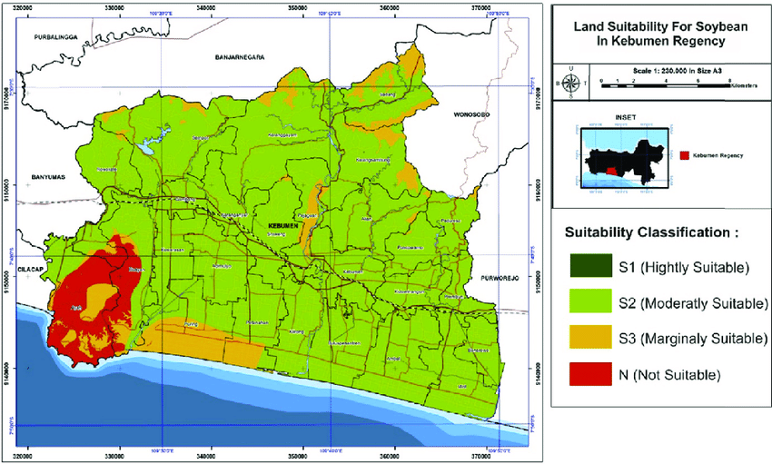
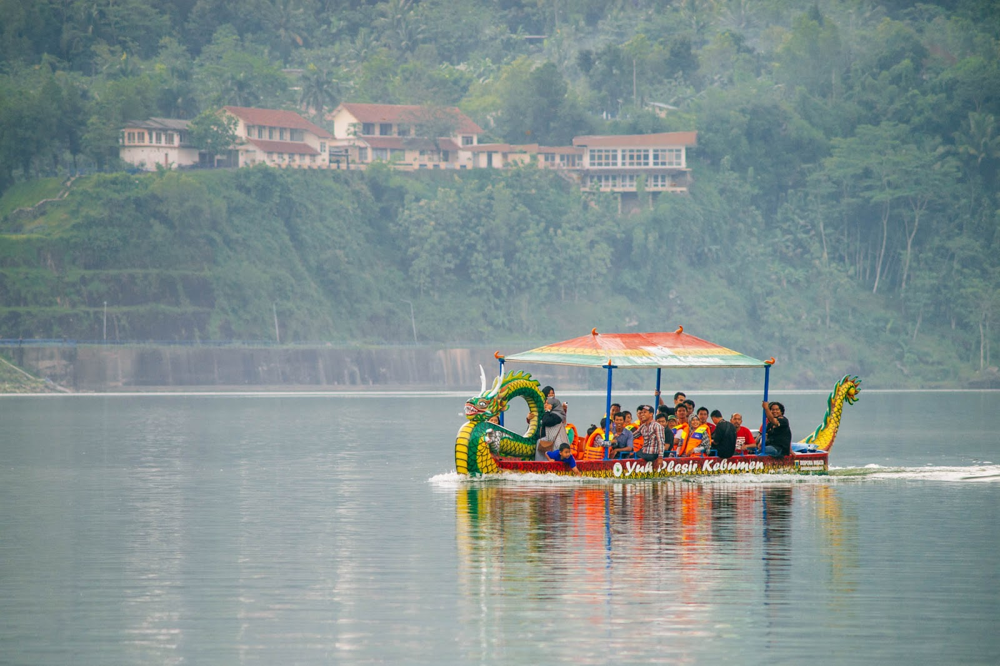
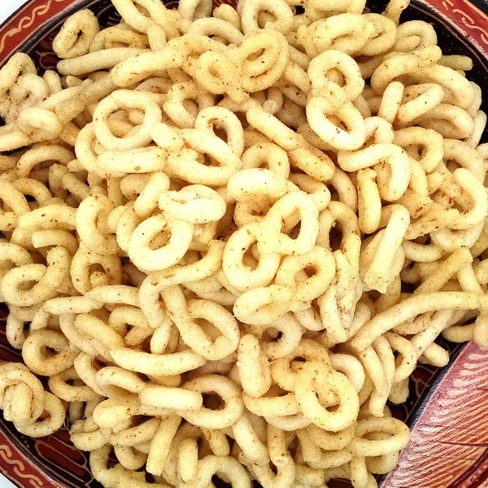
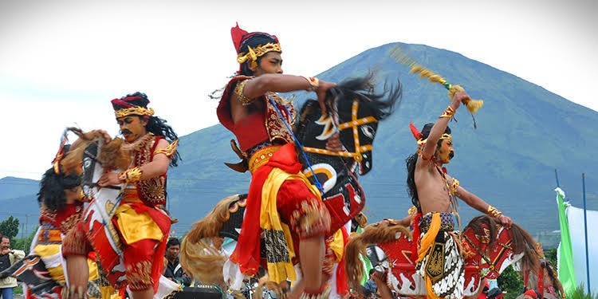
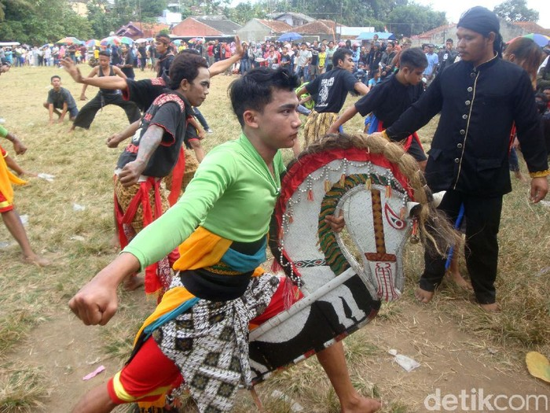

Sejarah Kota Kebumen
Sejarah awal mula Kebumen tidak telepas dari sejarah Mataram Islam.
Mataram membawa pengaruh terhadap terbentuknya Kebumen masih berada
dalam lingkungan Kerajaan Mataram. Tepatnya, Kebumen merupakan
daerah Manca Negara Kulon (wilayah Kademangan Karanglo) dan masih
dibawah Mataram.
Asal-usul nama Kebumen berawal dari tokoh Kyai Pangeran Bumidirja,
bangsawan ulama dari Mataram yang juga merupakan adik Sultan Agung
Hanyokro Kusumo. Ia dikenal sebagai penasehat raja yang berani
menyampaikan kebenaran dan kesalahan. Termasuk memberikan nasehat
pada raja, jika raja berbuat tidak adil.
Suatu waktu, Kyai Pangeran Bumidirjo memberanikan diri mengingatkan
keponakannya, yaitu Sunan Amangkurat I. Pasalnya, sunan telah
melanggar paugeran keadilan dan bertindak keras serta kejam juga
berkompromi dengan VOC (Belanda) hingga memusuhi bangsawan, ulama,
dan rakyat. Peringatan tersebut membuat Sunan Amangkurat I marah.
Menghadapi situasi tersebut, Kyai Pangeran Bumidirja memilih untuk
keluar dari kerajaan. Lalu, ia melepaskan nama kebangsawanannya dan
memakai nama Kyai Bumi saja.
Pada 1670, Kyai Bumi sampai ke Panjer dan mendapat hadian tanah di
sebelah utara kelok Sungai Lukulo. Lalu, ia membangun padepokan
/pondok yang dikenal dengan nama daerah Ki Bumi atau Ki Bumian. Nama
tersebut akhirnya menjadi Kebumen. Berdasarkan bukti sejarah,
Kebumen berasal dari kata Bumi, nama sebutan Kyai Bumidirjo. Kata
tersebut mendapatkan awalan ke dan akhiran an yang menyatakan
tempat. Sehingga, Kebumen berawal dari tempat tinggal Kyai
Bumidirjo.
Geografis

A. Letak Wilayah
7o271 - 7o501 Lintang Selatan
109o331- 109o501 Bujur Timur
B. Batas Wilayah
- Sebelah Timur : Kabupaten Purworejo & Kabupaten Wonosobo
- Sebelah Utara : Kabupaten Banjarnegara
- Sebelah Barat : Kabupaten Banyumas & Kabupaten Cilacap
- Sebelah Selatan : Samudera Indonesia
C. Luas Wilayah dan Penggunaan
Kabupaten Kebumen secara administratif terdiri dari 26 kecamatan
dengan luas wilayah sebesar 128.111,50 hektar atau 1.281,115 km²,
dengan kondisi beberapa wilayah merupakan daerah pantai dan
perbukitan, sedangkan sebagian besar merupakan dataran rendah.
Dari luas wilayah Kabupaten Kebumen, pada tahun 2013 tercatat
39.748,00 hektar atau sekitar 31,03% merupakan lahan sawah dan
88.363,50 hektar atau 68,97% lahan kering. Menurut sistem
irigasinya, sebagian besar lahan sawah beririgasi teknis (50,34%),
dan hampir seluruhnya dapat ditanami dua kali dalam setahun,
beririgasi setengah teknis (9,23%), beririgasi sederhana (5,77%),
beririgasi desa (2,65%) dan sebagian berupa sawah tadah hujan dan
pasang surut (32,02%).
Penggunaan lahan kering (bukan sawah) dibagi menjadi untuk lahan
pertanian sebesar 42.799,50 hektar (48,45%) dan bukan untuk
pertanian sebesar 45.544,00 hektar (51,55%). Lahan kering untuk
pertanian terbagi menjadi untuk tegal/kebun seluas 27.629,00 hektar,
ladang/huma seluas 745,00 hektar, perkebunan seluas 1.159,00 hektar,
hutan rakyat seluas 3.011,00 hektar, tambak seluas 24,00 hektar,
kolam seluas 53,50 hektar, padang penggembalaan seluas 33,00 hektar,
sementara tidak diusahakan seluas 231,00 hektar, dan lainnya seluas
9.914,00 hektar. Sedangkan lahan kering bukan untuk pertanian
digunakan untuk bangunan seluas 26.021,00 hektar, hutan negara
seluas 16.861,00 hektar, rawa-rawa seluas 12,00 hektar serta lainnya
seluas 2.670 hektar.
D. Iklim
Pada tahun 2013 curah hujan dan hari hujan di Kabupaten Kebumen
lebih rendah dari tahun sebelumnya. Tercatat curah hujan selama
tahun ini sebesar 3.787,00 mm lebih tinggi dari tahun sebelumnya
sebesar 2.328,43 mm dan hari hujan sebanyak 188 hari lebih sering
dari tahun sebelumnya sebanyak 108 hari.
Suhu terendah yang terpantau di stasiun pemantauan Wadaslintang pada
bulan Juli dengan suhu sekitar 20,60°C dan tertinggi 34,00°C pada
bulan Maret. Rata-rata kelembaban udara setahun 81,00% dan rata-rata
kecepatan angin 0,23 meter/detik.
Sedangkan pada stasiun pemantauan Sempor suhu terendah 21,60°C
terjadi pada bulan Agustus dan tertinggi 33,60°C pada bulan
Februari. Rata-rata kelembaban udara setahun 84,00% dan rata-rata
kecepatan angin 1,99 meter/detik.
Wisata
Kebumen memiliki banyak destinasi wisata yang akan membuatmu sulit
untuk melupakannya.Berikut beberapa destinasi wisata yang harus kamu
coba kunjungi!
1. Pantai Menganti
Pantai Menganti Kebumen dijuluki sebagai New Zealand-nya
Indonesia. Ya, pemandangan disajikan pantai eksotis di Desa
Karangduwur, Kecamatan Ayah, Kabupaten Kebumen, Jawa Tengah ini
memang menakjubkan, bahkan mirip dengan pesona pantai di Selandia
Baru.
Pantai Meganti cantik dengan pasir putih berpadu hamparan laut
biru Samudera Hindia, batu karang dan dibentengi bukit hijau.
Nama Menganti diyakini berasal dari kata “Menanti”. Konon dulu ada
panglima perang Majapahit yang melarikan diri ke pesisir selatan
ini karena hubungan asmara dengan kekasihnya tidak direstui raja
Pantai Menganti berjarak sekitar 30 kilometer dari pusat Kecamatan
Gombong, bisa ditempuh dalam waktu satu jam. Rute paling cepat
menuju Pantai Menganti dari Gombong melalui Kecamatan Ayah.
Perjalanan kemudian diteruskan melewati Jalan Pantai Menganti.
Setelah sampai di tempat parkir, Anda harus menaiki beberapa anak
tangga untuk sampai ke tepi pantainya. Di timur pantai bisa
dilihat panorama Tanjung Karangbata. Letaknya menjorok ke lautan,
mirip yang ada di Uluwatu dan Nusa Penida.
Kawasan pantai pasir di Menganti berada di sisi barat. Kawasan ini
merupakan pantai nelayan. Ketika siang hari, banyak perahu nelayan
yang berlabuh di tepi pantai. Di pantai nelayan, terdapat banyak
warung makan dan kamar mandi yang disediakan untuk pengunjung.
Di sekitar tanjung berserakan bebatuan yang disebut merupakan sisa
letusan gunung api purba. Para pengunjung biasanya mengabadikan
keindahan pantai menganti dari atas tebing keteb widadari. Dari
atas tebing tersebut, terlihat pemandangan pesisir dilengkapi
perbukitan hijau dengan pasir putih dan air yang jernih.
Pengunjung bisa menjelajahi kawasan bukit yang berada di
timur-selatan Pantai Menganti. Untuk pergi ke sana, tersedia
tumpangan pikap gratis.
Bukit tersebut berada di Tanjung Karangbata dan sering disebut
sebagai Bukit Gazebo. Gazebo dapat dipakai beristirahat oleh
pengunjung sembari menikmati panorama laut yang berpadu dengan
hijaunya pegunungan. Untuk bisa beristirahat di pondokan,
pengunjung tidak perlu membayar. Disekitar sana terdapat Lembah
Menguneng yang menjadi area outbond di atas ketinggian, mulai dari
sepeda gantung sampai balon udara.
2. Bukit Hood
Wisata Bukit Hud Kebumen merupakan sebuah bukit yang berada di
dekat pantai. Dari sini, wisatawan dapat melihat keindahan pantai
dengan sangat jelas. Berbatasan langsung dengan Samudra Hindia
menjadi daya tarik tersendiri bagi wisatawan yang mengunjunginya.
Nah bagi anda yang menginginkan dua wisata sekaligus dengan latar
belakang yang berbeda. Wisata Kebumen yang satu ini sangat
direkomendasikan untuk anda kunjungi.
Lokasi Wisata Alam Bukit Hood
Alamat Wisata Alam Bukit Hud berada di Desa Karangtengah,
Karangbolong, Buayan, Kebumen, Jawa Tengah. Bukit ini berada di
dekat Pantai Karang Bolong.
Rute Bukit Hood Kebumen
Jika anda sedang berada di Jogja dan sekitarnya, anda bisa
mengambil arah menuju Jl Deandles. Setelah itu, arahkan kendaraan
anda menuju Pantai Karang Bolong atau Pantai Suwuk.Setibanya di
Pantai Suwuk, ikuti saja jalan hingga menemukan Jembatan dan
bertemu pertigaan Cawang, kemudian menuju Alun-Alun Karang Bolong
lalu belok ke kanan dan melewati tanjakan. Bagi anda yang
kesulitan menemukan lokasi wisatanya bisa menggunakan bantuan
Goggle Maps atau bertanya masyarakat setempat.
Fasilitas Bukit Hood Kebumen
- Tempat Parkir
- Warung Makan
- Toilet
- Mushola
- Spot Foto
3. Waduk Sempor


Waduk yang menyatu dengan perbukitan hijau disekitarnya, merupakan
pemandangan cantik yang bisa kita temui di obyek wisata Waduk
Sempor, sebuah obyek wisata yang menyimpan beribu pesona dan
cerita. Sangat mudah dijangkau dengan alat transportasi darat,
alam permai yang tak kalah indahnya dengan obyek wisata di daerah
lain ini, bisa kita nikmati dengan seksama.
Keberadaan Waduk Sempor di Kebumen memberikan udara dan nuansa
sejuk yang tidak lazim untuk daerah Kebumen dilihat dari faktor
geografis Kebumen adalah sebuah kabupaten yang berlokasi dekat
dengan pantai yang umumnya bersuhu tinggi. Selain sebagai obyek
wisata Waduk Sempor merupakan sumber air untuk irigasi petani.
Waduk Sempor menjadi bagian sarana irigasi teknis untuk mengairi
ribuan sawah di wilayah Gombong.
Dibalik fungsinya sebagai sarana irigasi teknis bagi ribuan hektar
sawah di wilayah Gombong, waduk ini juga menyimpan potensi yang
besar sebagai obyek wisata. Selain daya tarik alamnya yang begitu
besar, obyek wisata ini juga dilengkapi dengan berbagai sarana
pendukung, antara lain wisma-wisma penginapan yang bisa disewa
secara perorangan maupun rombongan. Selain sebagai obyek
berwisata, tempat ini juga cocok dijadikan tempat untuk seminar,
rapat kerja dan kegiatan lainnya, karena selain tempatnya tenang,
juga memiliki sarana yang memadai untuk kegiatan tersebut.
Daya tarik utama obyek wisata ini adalah alamnya. Waduk seluas
puluhan hektar yang terletak di Desa Sempor, Kecamatan Sempor ini,
bila diamati begitu mirip sebuah danau alam yang dipagari oleh
perbukitan. Perbukitan tersebut ditanami ribuan batang pohon pinus
oleh Perhutani yang dalam waktu-waktu tertentu disadap getahnya.
Harmoni alam yang tercipta dari perpaduan waduk dengan perbukitan
nan hijau merupakan lukisan hidup yang begitu mempesona.
Kuliner
Selain obyek wisatanya yang mempesona Kebumen juga menyimpan kuliner
yang lezat.Apa saja kulinernya? Berikut beberapa kuliner yang ada di
Kota Walet tersebut
1. Nasi Penggel
Nasi Penggel Kebumen berisi nasi, sayur jeroan, dan sayur Nangka.
Makanan ini diberi nama sayur penggel karena bentuk nasi yang
disajikan. Nasi yang kita makan dibentuk seperti bola dan
disajikan sekitar 7 sampai 8 butir. Rasa yang gurih lezat makanan
ini tiada tandingannya.
2. Sate Ambal
Bagi para pecinta kuliner Kebumen, pasti hafal dengan sate yang
satu ini. Sate yang diberi bumbu tempe ini menjadi ikon dari kota
Kebumen itu sendiri. Bumbu tempe yang dipadukan dengan jahe dan
rempah lainnya membuat rasa gurih nan lezat sate ini makin
menggoda.
3. Soto Tamanwinangun
Soto merupakan makanan favorit dan memiliki ciri khas tersendiri
di setiap daerahnya, salah satunya soto tawanwinangun Kebumen.
Soto ini terbuat dari daging enthok, lalu kuahnya diberi santan
dan kaldu dari enthok tersebut. untuk rasa, jangan ditanya lagi.
Segera coba soto legendaris ini supaya terbayar rasa lelah dan
lapar Anda.
4. Sale Pisang
Sale pisang merupakan makanan khas Kebumen yang terbuat dari buah
pisang yang dijemur lalu diiris tipis. Setelah itu digoreng
menggunakan tepung biasa. Untuk rasa, bisa mengalahkan manisnya
paras Anda. Cobalah makanan manis ini, dijamin Anda tak cukup
memakan satu buah
5. Lanting

Lanting juga termasuk camilan atau makanan khas Kebumen yang tak
kalah menarik. Lanting merupakan camilan yang terbuat dari bahan
singkong yang diolah dan dibentuk dua bulatan seperti angka
delapan.Lanting mempunyai cita rasa gurih dan tekstur yang renyah.
Selain dikonsumsi sebagai camilan, lanting juga sangat cocok
disantap sebagai lauk pendamping untuk berbagai menu makanan. Jika
Anda berkunjung ke Kebumen, lanting bisa menjadi pilihan oleh-oleh
khas untuk dibawa pulang.
Budaya
Selain obyek wisata dan kulinernya, Kebumen juga memiliki
kebubudayaan yang unik dan menarik! Beberapa budaya yang ada di kota
walet ini yaitu:
1. Ebeg / Kuda Lumping


Kesenian kuda lumping atau jaran kepang atau sering juga ada yang
menyebutnya
Ebeg/Ebleg
mungkin sudah sering kita dengar, atau bahkan pernah menyaksikan.
Bagi yang hidup di jawa tengah, kesenian kuda lumping dalam setiap
pementasannya selalu menarik banyak penonton karena hiburan yang
ditampilkan. Pada tahun 2008, Kebumen bahkan memecahkan rekor MURI
dengan Kuda lumping terbesar di Indonesia.
Kini pertunjukan jaran kepang atau ebeg memang jarang kita temui.
Padahal dulu ketika saya masih kecil, pertunjukan ebeg masih cukup
sering tampil mengisi acara hajatan-hajatan di kampung. Dan setiap
ada pertunjukan ebeg, pasti banyak penonton yang menyaksikannya,
bahkan penonton juga datang dari desa lain.
Ebeg adalah kesenian tari yang dimainkan dengan menggunakan kuda
tiruan yang terbuat dari anyaman bambu. Ebeg biasanya diiringi
dengan alat musik yang terdiri dari kendang, gamelan pelog, gong,
kenong, dan terompet khas kuda lumping.
Dalam setiap pertunjukan ebeg, ada beberapa karakter yang biasanya
ditampilkan, diantaranya seperti para penari yang menunggang kuda
lumping dengan warna hitam putih, konon ini adalah simbol pasukan
berkuda mataram yang gagah berani. Selain itu adapula barongan
sebagai simbol Sultan Agung yang terkenal dengan julukan Singa
Mataram dan penthul sebagai simbol penasihat raja sekaligus
penasehat peperangan.
Dalam rombongan ebeg, selain penari ebeg, barongan dan penthul,
adapula penabuh gamelan dan penimbul ebeg. Penimbul ebeg adalah
pawang yang bertugas memanggil dan memulangkan arwah dan
penanggung jawab pertunjukan Ebeg. Penimbul ebeg menggunakan sajen
(sesaji) sebagai sarana atau media untuk memanggil roh para
leluhur. Sesajen biasanya berupa bunga, kemenyan, kelapa muda dan
lain-lain. Penimbul Ebeg juga harus mampu dalam mengendalikan dan
mengembalikan kesadaran para pemain yang kerasukan.
Gerakan seni tari dalam ebeg atau jaran kepang yang dinamis dan
agresif menggambarkan gerakan pasukan kavaleri berkuda kerajaan
Mataram yang berada ditengah medan peperangan. Salah satu hal yang
menarik bagi penonton untuk datang menyaksikan pertunjukan ebeg
adalah adanya atraksi kekuatan magis yang ditampilkan para penari
ebeg.
Pada awal pertunjukan, para penari akan unjuk kebolehan menari
dengan mengikuti alunan irama gending. Namun menjelang puncak
tarian, para penari akan mempercepat tariannya dan kemudian mulai
bertingkah aneh seperti kejang dan tarian mulai tidak beraturan
dan tidak terkontrol. Pada saat seperti ini, mereka telah
kehilangan kesadarannya. Mereka telah kerasukan arwah-arwah yang
dipanggil penimbul. Mereka juga tidak sadar sama sekali sehingga
tidak mengingat apa yang dilakukan.
Semakin banyak arwah yang datang dan merasuki para penari, suasana
akan menjadi semakin kacau dan tidak terkendali. Bahkan adakalanya
kerasukan juga bisa menimpa penonton yang menyaksikan. Pada saat
seperti ini tugas penimbul Ebeg akan menjadi semakin berat, namun
justru inilah yang menjadi puncak kemeriahan pertunjukan ebeg.
Para penari yang kerasukan ini biasa disebut dengan istilah
mendem.
Pada saat
mendem
, para penari juga akan melakukan atraksi-atraksi di luar nalar
seperti berjalan diatas pecahan beling dan bara api, makan kaca
dan bara api, disayat pisau, dibacok dengan golok dan lain-lain.
Ketika pertunjukan Ebeg telah usai, penimbul akan menyadarkan para
penari yang kerasukan dan memulangkan arwah-arwah kembali ke
tempat dimana mereka tinggal.
Kekuatan mistis memang menjadi daya tarik kesenian ebeg ini. Meski
demikian hal seperti inilah yang dirasa sebagian penonton
menjadikan seni ebeg unik dan berbeda dengan seni pertunjukan yang
lain. Kini, kesenian ebeg khususnya di Kabupaten Kebumen memang
masih hidup dan dilestarikan di pelosok-pelosok desa. Namun
sebagai warisan budaya nenek moyang, sudah menjadi keharusan bagi
kita sebagai generasi penerus untuk ikut menjaga dan
melestarikannya.
2. Wayang Kulit
Kesenian tradisional wayang kulit lahir, hidup, tumbuh, berkembang
terutama dalam masyarakat Jawa. Lebih dari sekadar pertunjukan,
wayang kulit dahulu merupakan media permenungan menuju roh
spiritual para dewa.
Istilah
wayang
sendiri berasal dari kata “ma Hyang”, yang berarti menuju
spiritualitas Sang Kuasa. Tapi ada juga yang mengatakan “wayang”
berasal dari teknik pertunjukan yang mengandalkan bayangan
(bayang/wayang) di layar.
Wayang kulit, terbuat dari kulit kerbau, diyakini sebagai embrio
dari berbagai jenis wayang yang ada saat ini. Ia dimainkan seorang
dalang; diiringi musik gamelan yang dimainkan sekelompok nayaga
(pemain gamelan) dan tembang yang dinyanyikan para pesinden.
Setiap bagian dalam pementasan wayang mempunyai simbol dan makna
filosofis yang kuat. Apalagi dari segi isi, cerita pewayangan
selalu mengajarkan budi pekerti yang luhur, saling mencintai dan
menghormati, sambil terkadang diselipkan kritik sosial dan peran
lucu lewat adegan goro-goro.
Wayang kulit memiliki sejarah panjang. Catatan tertua tentang
wayang kulit atau wayang purwa tersua dalam Prasasti Kuti
bertarikh 840 M dari Joho, Sidoarjo, Jawa Timur. Prasasti ini
menyebut kata haringgit atau dalang. “Haringgit adalah bentuk
halus dari kata ringgit. Kata ini sampai sekarang masih ada dalam
bahasa Jawa, yang berarti wayang,” catat Timbul Haryono, guru
besar arkeologi Universitas Gadjah Mada, dalam “Masyarakat Jawa
Kuna dan Lingkungannya Pada Masa Borobudur” termuat di 100 Tahun
Pasca Pemugaran Candi Borobudur.
Meski wayang kulit kini tampil dalam beragam wajah, pertunjukan
ini tetap memikat dan lestari. Masing-masing tipe pertunjukan
punya penggemarnya. Orang-orang dari negeri jauh pun rela datang
ke Indonesia untuk mempelajari sejarah dan bentuk-bentuk
pertunjukan wayang kulit untuk kemudian digulirkan dalam bentuk
baru di negara mereka masing-masing.
Wayang kulit lahir, tumbuh, hidup di Indonesia, kemudian menyebar
ke penjuru dunia. Tidak salah jika Badan Perserikatan
Bangsa-Bangsa untuk urusan Pendidikan, Ilmu Pengetahuan, dan
Kebudayaan (Unesco) menetapkan wayang kulit sebagai warisan budaya
dunia dari Indonesia.
3. Tari Lawet
Burung Lawet atau Walet, sarang burung walet dan Tugu Lawet
merupakan beberapa ikon dan ciri khas dari kabupaten Kebumen, yang
mana kreatifitas seni yang berhubungan dengan burung walet salah
satunya berwujud tarian Walet atau tari Lawet.
Tari Lawet Kebumen merupakan karya seni dan kreativitas dari Bapak
Sardjoko yang awal mulanya diciptakan pada Februari 1989. Asul
usul tari Lawet adalah keinginan dari Bupati Kebumen pada tahun
1989 untuk diadakan pentas tari massal khas Kebumen dalam rangka
untuk pembukaan acara Jambore Daerah Jawa Tengah yang diadakan di
bukit perkemahan Widoro, Kebumen.
Berangkat dari keinginan Bapak Bupati Kebumen waktu itu, maka
seorang seniman dari Klaten yang bernama Bapak Sardjoko melakukan
survei dan pengamatan untuk obyek refleksi budaya ke pantai
selatan Kebumen, tepatnya di daerah Karang Bolong. Mengapa dipilih
Karangbolong, karena di situlah terdapat goa-goa yang menjadi
sarang burung Lawet dengan hamparan laut yang luas di depannya,
burung-burung Lawet yang beterbangan di atas samudra, dan beberapa
orang yang memanjat goa untuk mengambil / panen sarang burung
Lawet. Dengan melihat kondisi alam dan perilaku satwa serta orang
yang mengunduh sarang Lawet, maka menjadi inspirasi untuk
dituangkan dalam bentuk gerak tarian dan lagu yang berwujud tari
Lawet. Gerakan tari Lawet lincah dan ceria, disesuaikan dengan
gerak burung Lawet. Sehingga gerakan dalam tari lawet meliputi
ngulet, loncat egot, angklingan, didis, lenggut, nyucuk, ukel,
lincah nyucuk, dan kepetan. Tarian khas Kebumen yang berupa tari
Lawet ini diiringi dengan musik gamelan yang disebut dengan Lawet
Aneba yang merupakan singkatan dari Laras Pelog Patet Barang.
Syair lagu yang dinyanyikan bersamaan dengan musik saat mengiringi
tari Lawet adalah : “Bambang wetan pratandha wis gagat enjang.
Sesamberane rebut marga mbarubut saking gua Karangbolong. Peksi
lawet ireng menges wulune, cukat trengginas katon gembira aneg
luhuring samudra gung ngupa boga tumekaning surya andalidir para
lawet bali maring gua”. Syair ini intinya menceritakan tentang
rutinitas dan aktivitas burung Lawet sehari-hari dari waktu bangun
tidur lalu keluar gua untuk mencari makan sampai kembali lagi ke
dalam gua saat sore hari. Kelengkapan dari tari Lawet ini juga
sampai pada kostum para penarinya, yang juga kostumnya didesain
oleh bapak Sardjoko.